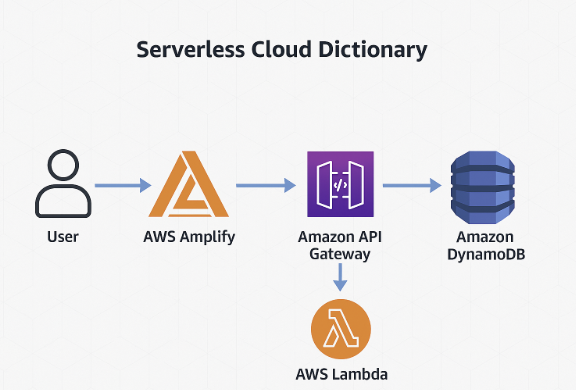

Serverless Cloud Dictionary
Project Overview:
The Serverless Cloud Dictionary is a modern, fully serverless web application that allows users to search for the meanings of cloud computing terms (e.g., Lambda, EC2, S3, API Gateway). The system is built entirely on AWS services, ensuring high scalability, zero-maintenance, and cost-efficiency.The project integrates DynamoDB, AWS Lambda (Node.js 22.x), API Gateway (REST API), and AWS Amplify for hosting the frontend. It demonstrates practical cloud development skills building APIs, querying databases, handling serverless logic, and deploying a static frontend app to the cloud.
Architecture Overview
1. Frontend (HTML, CSS and Javascript)-User inetrface hosted on Github and connected to AWS Amplify.
2. Api Gateway(REST API) - Routes HTTP requets from the frontend to the backend.
3. AWS Lambda (Node.js 22.x)- Acts as the backend logic fetching terms definnitions from DynamoDB.
4. DynamoDB- NoSQL database storing terms and their definnitions
Steps taken to complets this project :
1. Create DynamoDB Table
.png)
.png)
.png)
.png)
- Open AWS DynamoDB Console and Create a table named CloudDictionary.
- Set Primary Key as term(String).
- Add sample Items.
2. Create a Lambda Fuction
.png)
.png)
.png)
.png)
.png)
- Create a Lambda Fuction
- Set Runtime to Node.js 22.x
- Implemented logic to fetch data from DynamoDB based on the query parameter.
3. Configured Api Gateway(Rest API)
.png)
.png)
.png)
- Create a new Rest Api in Api Gateway
- Enable Cors to allow broswer requets
- Deploy the Api to a new stage (prod)
- Copied the inoke URL for frontend use
4. Build the frontend
.png)
.png)
- index.html is for user inetrface.
- index.js is Javascript logic for making Api requet.
- Deploy the frontend website on Github
5. Deployed Frontend Using AWS Amplify
.png)
.png)
.png)
.png)
.png)
.png)
.png)
- Create a new Amplify app and connect the frontend with Github.
- Deploy the website so that it's accessible via a public URL.